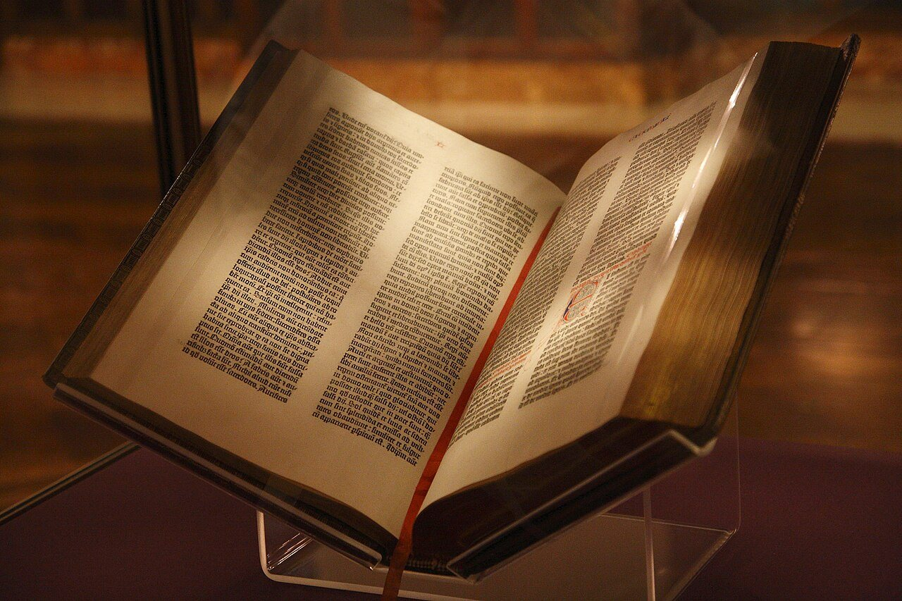
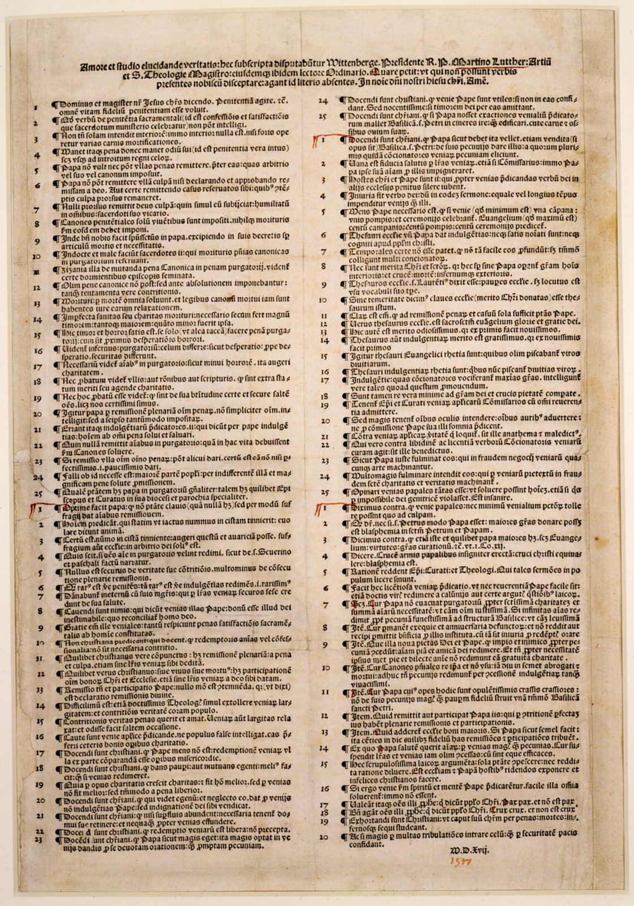
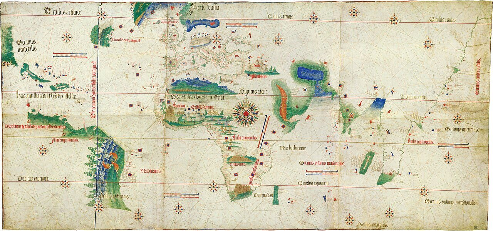

사진 · 구텐베르크 성경
중학교 역사① · 4단원 지역 세계의 교류와 변화
인쇄르네상스·종교 개혁·신항로 개척
구텐베르크 성경(1455 무렵) · 뉴욕 공공도서관 · 사진 Joshua Keller · CC BY 2.0
“무엇이 유럽을
무엇이 유럽을
바꾸었을까?
사실르네상스 · 종교 개혁 · 신항로 개척
해석세 변화는 어떻게 이어졌을까
확장다른 대륙 사람들에게는
르네상스
사실14세기 이탈리아 도시에서
해석고대 그리스·로마를 다시 보다
확장누가 돈을 댔을까
1377 · 1455
1377고려 『직지』, 금속 활자
1455 무렵구텐베르크 성경
해석무엇이 달랐을까

사진 · 이 종이는
어떻게 퍼졌을까?
이 종이는
어떻게 퍼졌을까?
사실1517년 루터의 95개조 반박문
해석면벌부 판매를 비판하다
사실·주장교회 문에 못을 박았을까
루터, 「95개조 반박문」 인쇄본(1517) · 퍼블릭 도메인
갈라진 크리스트교
루터파독일 · 북유럽
칼뱅파스위스 · 네덜란드
영국 국교회국왕이 교회의 머리
가톨릭 개혁예수회
1555
사실아우크스부르크 화의
해석제후가 종교를 고른다
확장백성은 고를 수 있었을까
왜 바다로
나갔을까?
사실후추 · 정향 · 육두구
해석중간 상인 없이 직접
확장금, 그리고 선교
바닷길의 연표
1488디아스, 희망봉
1492콜럼버스, 아메리카
1498바스쿠 다 가마, 캘리컷
1519~22마젤란 함대, 세계 일주

사진 · 이 지도에
세로로 그은 선은?
이 지도에
세로로 그은 선은?
사실토르데시야스 조약(1494)의 선
해석포르투갈과 에스파냐가 세계를 나누다
사실·주장그곳 사람들에게 물었을까
칸티누 세계 지도(포르투갈, 1502) · 퍼블릭 도메인
‘발견’일까?
사실이미 수천만 명이 살던 대륙
해석정복 · 질병 · 강제 노동
확장오간 작물과 동물(콜럼버스 교환)
“유럽을 가장 크게 바꾼 것은 이다.